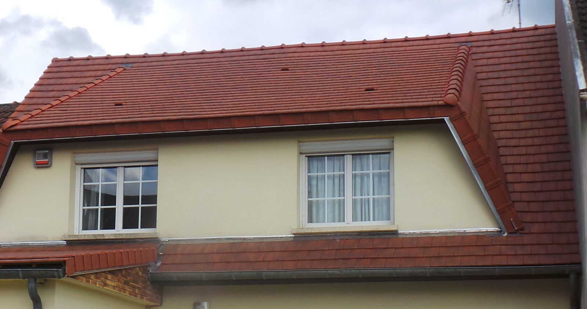
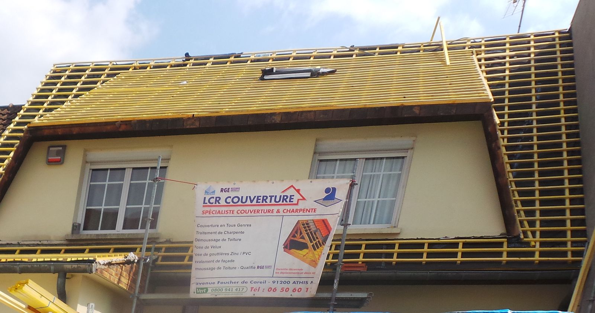
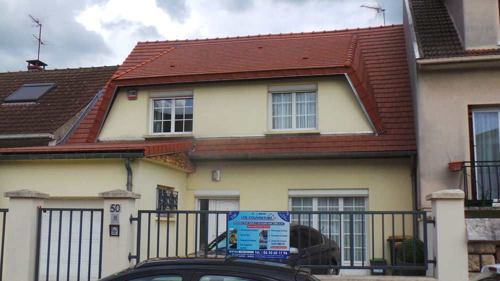
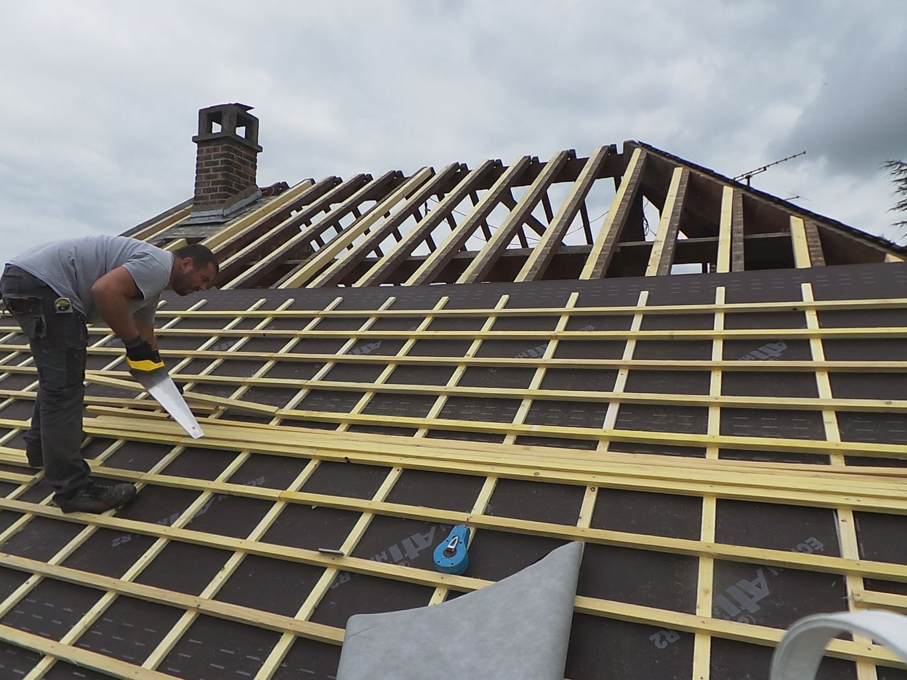
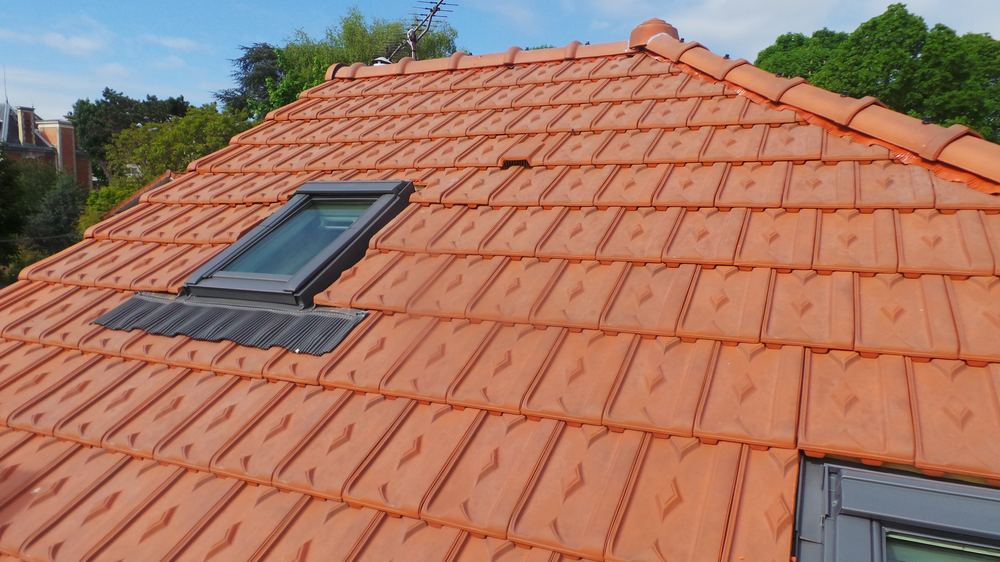
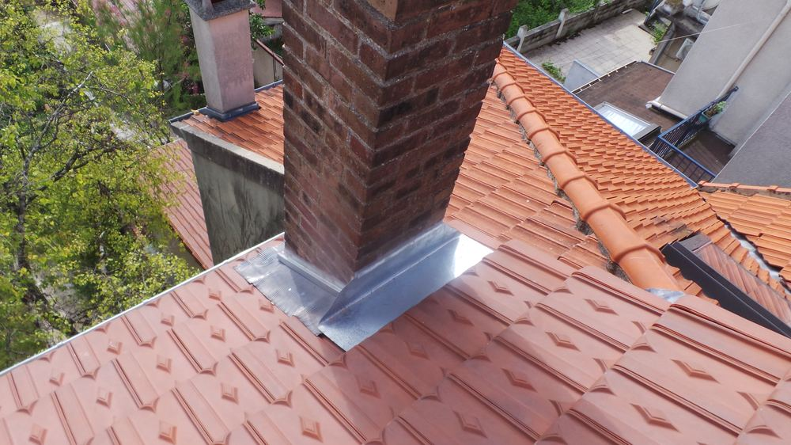
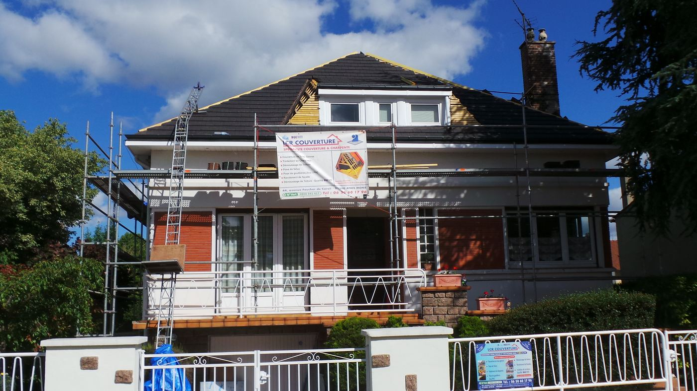
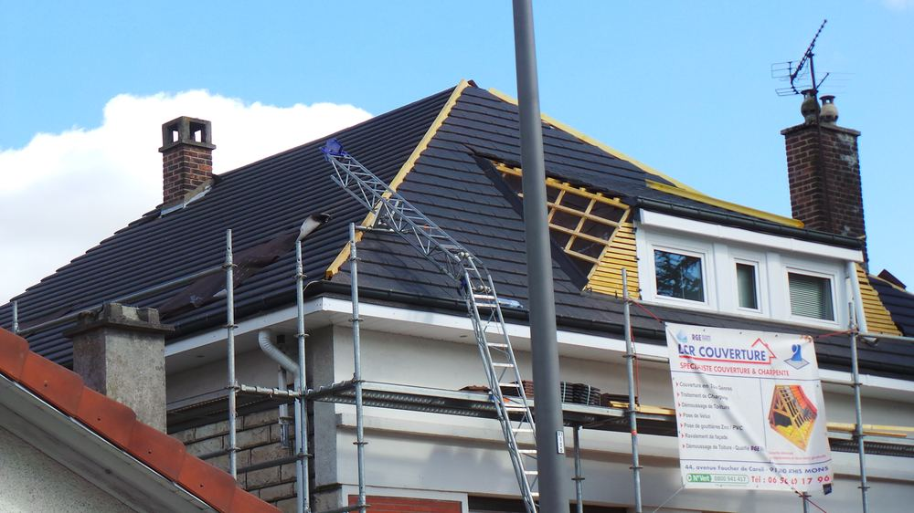

Propriétaires · Essonne et alentours
Un toit, ça se refait une fois. Autant bien le faire.
Cette page se lit en 2 minutes. Elle vous dit comment on travaille, à partir de combien, et si votre projet est fait pour nous. Si c'est le cas, on vous rappelle dans l'heure, ou vous choisissez vous-même votre rendez-vous.
Vérifier mon projet- Devis gratuit sous 48 h
- Garantie décennale
- RGE et Qualibat
Vous connaissez sûrement ça.
- Le couvreur qui ne rappelle jamais.
- Celui qui donne un prix au téléphone sans être monté sur le toit.
- Celui qui répare la même fuite trois fois.
- Le devis flou, puis les « surprises » une fois le chantier commencé.
Un toit mal fait ne se voit pas tout de suite. Il se voit à la première grosse pluie : une tache au plafond, un isolant qui a pris l'eau, une charpente qui s'abîme. Et là, ce n'est plus une réparation. C'est un deuxième chantier.
Le couvreur le moins cher est souvent celui qu'on paie deux fois.
Chez LCR, on fait l'inverse.
Couvreurs à Athis-Mons depuis 2016. Quatre règles, sur chaque chantier :
- 1
On décroche.
Vous laissez votre demande : on vous rappelle dans l'heure, en journée.
- 2
On monte sur le toit avant de chiffrer.
Pas de prix au hasard. On regarde, on mesure, et on vous montre ce qu'on a vu.
- 3
Un devis clair, sous 48 h.
Ligne par ligne. Ce qui est écrit sur le devis, c'est ce qui est fait.
- 4
Votre maison protégée.
Chantier signalé et bâché, et couvert par notre garantie décennale.
Le même toit, pendant puis après.


Ils nous ont confié leur toit.
- ★★★★★
« Les travaux étaient rapides, environ 8 jours pour une toiture de 110m² »
Hugo B.
- ★★★★★
« Très satisfaite de cette entreprise. Devis rapide et correct… »
Sounia H.
- ★★★★★
« …une recherche de fuite sur un autre bien. Diagnostic effectué rapidement… »
Sandy R.
- ★★★★★
« Entreprise très sérieuse que je recommande vivement ! Certifiée RGE… »
Benoît M.
Extraits courts, mot pour mot, de notre fiche Google. Lire les 82 avis






Soyons clairs : on n'est pas faits pour tout le monde.
On préfère vous le dire maintenant plutôt qu'au téléphone.
On est faits pour travailler ensemble si…
- vous êtes propriétaire, ou vous demandez pour un proche qui l'est ;
- votre maison est en Essonne ou dans une ville voisine du 94, du 92 ou de Versailles ;
- votre projet est prévu dans les prochains mois ;
- vous voulez un travail garanti, pas seulement le prix le plus bas.
On ne l'est pas si…
- vous voulez seulement un prix par téléphone ;
- vous cherchez une rustine en attendant ;
- vous cherchez avant tout le moins cher, quitte à tout refaire dans cinq ans ;
- vous êtes locataire : c'est votre propriétaire qui décide.
Pourquoi ce tri ? Parce que chaque devis demande une visite sur le toit. Le temps qu'on ne passe pas sur des projets qui ne se feront pas, on le passe sur le vôtre.
Combien ça coûte, vraiment ?
On ne chiffre jamais un toit qu'on n'a pas vu : la surface, la pente, l'état de la charpente et l'accès changent tout. Un prix donné au téléphone, c'est soit un prix gonflé « au cas où », soit des surprises pendant le chantier.
C'est pour ça que la visite et le devis sont gratuits : vous savez exactement ce que vous payez, ligne par ligne, avant de décider. Vous ne payez rien tant que vous n'avez pas signé.
Les aides. Comme nous sommes certifiés RGE, vos travaux d'isolation peuvent ouvrir droit à des aides de l'État, selon vos revenus et votre logement.
Ce qui se passe après votre demande.
Pas de surprise : voici exactement la suite, du formulaire jusqu'à votre toit refait.
- Vous répondez à 6 questions. Une minute, en bas de cette page.
- Vous choisissez comment fixer la visite :
On vous appelle
Dans l'heure (en journée). 5 minutes pour comprendre votre projet et fixer ensemble le jour de la visite.
Vous réservez vous-mêmeVous choisissez votre jour et votre créneau dans le formulaire. On vous appelle juste pour le confirmer.
- La visite chez vous. On monte sur le toit, on mesure, on prend des photos et on vous montre ce qu'on a vu.
- Votre devis détaillé arrive sous 48 h, ligne par ligne.
- Vous signez, on fixe ensemble la date du chantier.
- On refait votre toit, maison protégée, garantie décennale.
De votre côté, deux choses seulement
- Décrochez quand on vous appelle. L'appel vient du 06 50 60 17 96. Enregistrer ce numéro
- Soyez là le jour de la visite, vous ou un proche majeur. On doit pouvoir accéder aux combles et voir le toit avec vous.
Vos questions.
Pouvez-vous me donner un prix par téléphone ?
Non, et c'est volontaire. Un prix donné sans voir le toit, c'est soit un prix gonflé « au cas où », soit des surprises pendant le chantier. On monte, on regarde, et votre devis arrive sous 48 h.
Le devis est-il payant ?
Non. Le devis est gratuit et sans engagement.
Et en cas de fuite ?
Dites-le dans le formulaire : on vous rappelle dans l'heure (en journée) et on voit ensemble quand passer.
Êtes-vous assurés ?
Oui. Nos chantiers sont couverts par la garantie décennale.
Où intervenez-vous ?
Nous sommes à Athis-Mons (91). Nous intervenons dans l'Essonne et les villes voisines du Val-de-Marne, des Hauts-de-Seine et des Yvelines (secteur de Versailles).
Votre projet est-il éligible ?
6 questions, une minute. À la fin, vous choisissez : on vous rappelle dans l'heure, ou vous prenez votre rendez-vous vous-même.
Question 1 sur 6
C'est noté, .
Votre demande de rendez-vous : , chez vous. On vous appelle dans l'heure (en journée) pour le confirmer.
On vous appelle dans l'heure (en journée) au pour fixer ensemble le jour de la visite.
- Décrochez : l'appel vient du 06 50 60 17 96. Enregistrer ce numéro
- Le jour de la visite, soyez là, vous ou un proche majeur, pour nous ouvrir et nous montrer l'accès aux combles.
- Gardez sous la main l'adresse du logement et, si vous pouvez, une photo du toit.